library(tidyverse)
library(zoo)
library(ggplot2)
library(gridExtra)
library(scales)
library(lme4)
library(geepack) Warning: package 'geepack' was built under R version 4.4.3library(viridis) library(tidyverse)
library(zoo)
library(ggplot2)
library(gridExtra)
library(scales)
library(lme4)
library(geepack) Warning: package 'geepack' was built under R version 4.4.3library(viridis) data <- read.csv("nursebp.csv", header = TRUE)
data$SNUM <- as.factor(data$SNUM)
data$PHASE <- as.factor(data$PHASE)
data$DAY <- as.factor(data$DAY)
data$POSTURE <- as.factor(data$POSTURE)
data$FH123 <- as.factor(data$FH123)
data <- data %>%
mutate(
# in hours
hour_of_day = floor(time / 60),
# 20-minute
time_20 = floor(time / 20) * 20/60,
time2 = time^2
)n_subjects <- length(unique(data$SNUM))
n_subjects #有几个护士参与[1] 203nrow(data)/n_subjects[1] 47.15764#每个人平均有几个观测值（给自己测了几次）missing_values <- sapply(data, function(x) sum(is.na(x)))
print(missing_values[missing_values > 0])MNACT5 STR HAP TIR
985 754 755 755 num_vars <- c("SYS", "DIA", "HRT", "MNACT5", "STR", "HAP", "TIR", "AGE")
summary_stats <- data %>%
select(all_of(num_vars)) %>%
summary()
print(summary_stats) SYS DIA HRT MNACT5
Min. : 75.0 Min. : 40.00 Min. : 35.00 Min. : 0.0
1st Qu.:108.0 1st Qu.: 63.00 1st Qu.: 71.00 1st Qu.:160.2
Median :117.0 Median : 71.00 Median : 80.00 Median :207.0
Mean :118.2 Mean : 71.38 Mean : 80.03 Mean :190.4
3rd Qu.:127.0 3rd Qu.: 79.00 3rd Qu.: 88.00 3rd Qu.:236.4
Max. :200.0 Max. :120.00 Max. :144.00 Max. :359.4
NA's :985
STR HAP TIR AGE
Min. :1.00 Min. :1.000 Min. :1.000 Min. :24.00
1st Qu.:1.00 1st Qu.:2.000 1st Qu.:1.000 1st Qu.:33.00
Median :1.00 Median :3.000 Median :2.000 Median :38.00
Mean :1.51 Mean :3.099 Mean :1.954 Mean :37.82
3rd Qu.:2.00 3rd Qu.:4.000 3rd Qu.:3.000 3rd Qu.:43.00
Max. :5.00 Max. :5.000 Max. :5.000 Max. :50.00
NA's :754 NA's :755 NA's :755 vars <- c("PHASE", "DAY", "POSTURE", "FH123")
for (var in vars) {
cat(var)
print(table(data[[var]]))
cat("Percentages")
print(round(prop.table(table(data[[var]])) * 100, 1))
}PHASE
F L
4737 4836
Percentages
F L
49.5 50.5
DAY
NW W
4116 5457
Percentages
NW W
43 57
POSTURE
RECLINE SIT STAND
586 631 4101 4255
Percentages
RECLINE SIT STAND
6.1 6.6 42.8 44.4
FH123
NO YES YESYES
5298 3633 642
Percentages
NO YES YESYES
55.3 38.0 6.7 #box plot
par(mfrow = c(2, 2))
hist(data$SYS, main = "Distribution of Systolic BP", xlab = "SYS", col = "lightblue")
hist(data$DIA, main = "Distribution of Diastolic BP", xlab = "DIA", col = "lightgreen")
hist(data$HRT, main = "Distribution of Heart Rate", xlab = "HRT", col = "lightpink")
hist(data$MNACT5, main = "Distribution of Activity Level", xlab = "MNACT5", col = "lightyellow")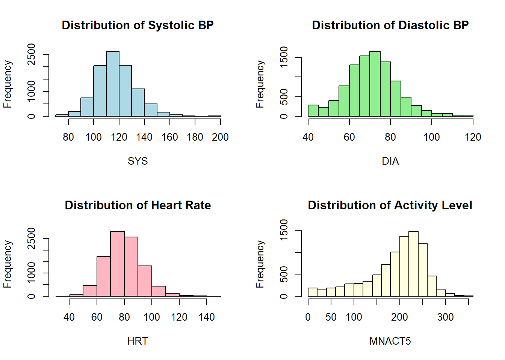
par(mfrow = c(1, 1))bp_by_day <- ggplot(data, aes(x = DAY, y = SYS, fill = DAY)) +
geom_boxplot() +
labs(title = "Systolic BP by Day Type",
x = "Day Type",
y = "Systolic Blood Pressure") +
scale_fill_manual(values = c("skyblue", "salmon"),
labels = c("Non-workday", "Workday")) +
theme_minimal()
print(bp_by_day)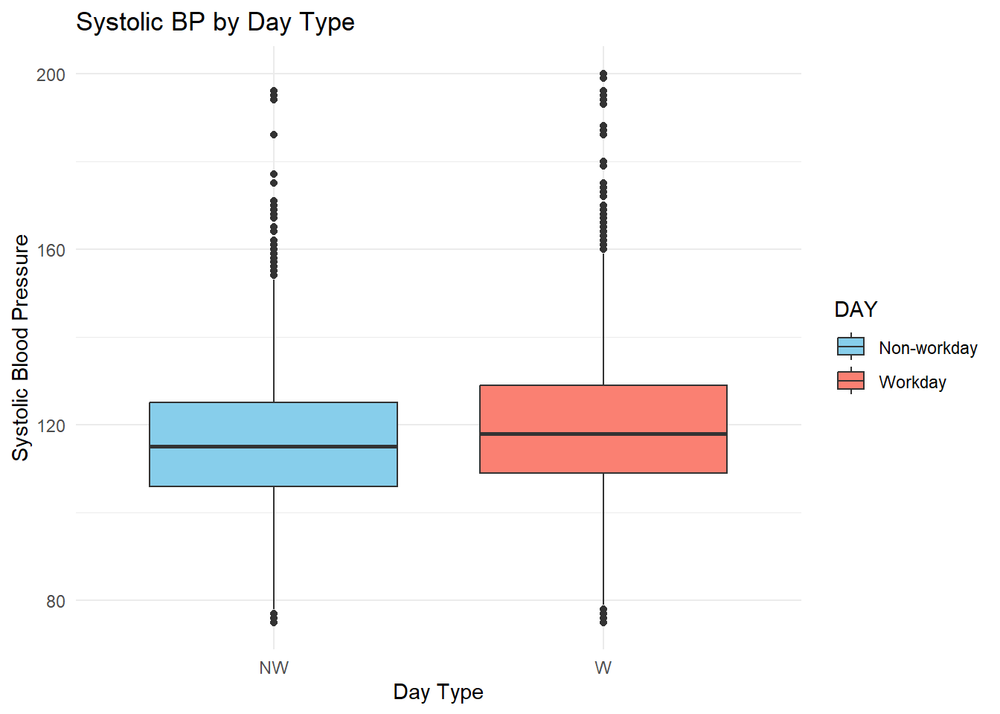
bp_by_fh <- ggplot(data, aes(x = FH123, y = SYS, fill = FH123)) +
geom_boxplot() +
labs(title = "Systolic BP by Family History",
x = "Family History",
y = "Systolic Blood Pressure") +
scale_fill_manual(values = c("lightblue", "lightgreen", "salmon"),
labels = c("No hypertensive parents",
"One hypertensive parent",
"Both parents hypertensive")) +
theme_minimal()
print(bp_by_fh)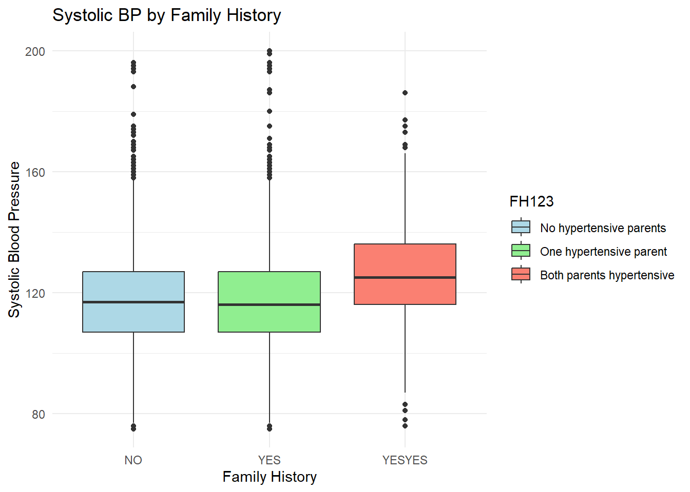
bp_by_str <- ggplot(data, aes(x = STR, y = SYS, fill = as.factor(STR))) +
geom_boxplot() +
labs(title = "Systolic BP by Family History",
x = "Family History",
y = "Systolic Blood Pressure") +
scale_fill_manual(values = c("lightblue", "lightgreen", "salmon","blue","yellow"),
labels = c("1","2","3","4","5")) +
theme_minimal()
print(bp_by_str)Warning: Removed 754 rows containing missing values or values outside the scale range
(`stat_boxplot()`).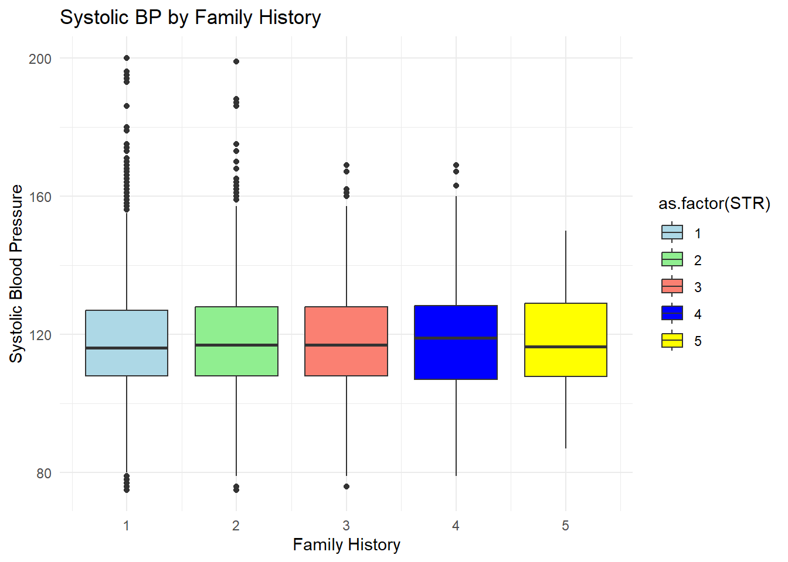
corr_vars <- c("SYS", "DIA", "HRT", "MNACT5", "STR", "HAP", "TIR", "AGE")
correlation_matrix <- cor(data[, corr_vars], use = "pairwise.complete.obs")
print(correlation_matrix[1,]) SYS DIA HRT MNACT5 STR HAP
1.00000000 0.53557471 0.18468989 0.18214753 0.02153487 0.04767398
TIR AGE
-0.08736763 0.03479532 corrplot::corrplot(correlation_matrix,
method = "color",
type = "upper",
order = "hclust",
tl.col = "black",
tl.srt = 45,
addCoef.col = "black",
number.cex = 0.7)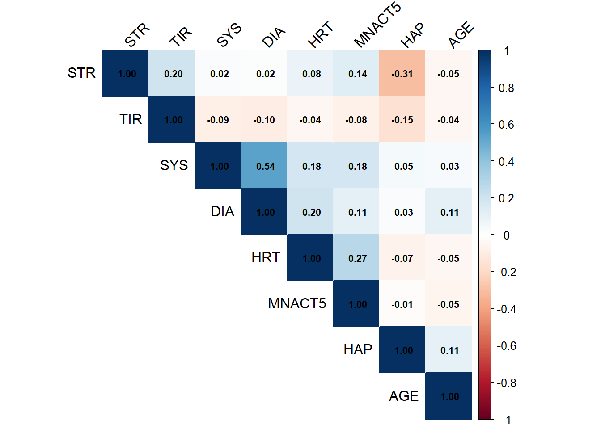
#bars
fh_summary <- data %>%
group_by(FH123) %>%
summarise(
mean_SYS = mean(SYS, na.rm = TRUE),
sd_SYS = sd(SYS, na.rm = TRUE),
n = n(),
se_SYS = sd_SYS / sqrt(n)
)
print(fh_summary)# A tibble: 3 × 5
FH123 mean_SYS sd_SYS n se_SYS
<fct> <dbl> <dbl> <int> <dbl>
1 NO 118. 15.4 5298 0.212
2 YES 117. 15.4 3633 0.256
3 YESYES 126. 15.5 642 0.612subject_fh_data <- data %>%
group_by(SNUM, FH123) %>%
summarise(mean_SYS = mean(SYS, na.rm = TRUE)) %>%
ungroup()`summarise()` has grouped output by 'SNUM'. You can override using the
`.groups` argument.subject_fh_summary <- subject_fh_data %>%
group_by(FH123) %>%
summarise(
mean_SYS = mean(mean_SYS, na.rm = TRUE),
sd_SYS = sd(mean_SYS, na.rm = TRUE),#???? 为什么不行
n = n(),
se_SYS = sd_SYS / sqrt(n)
)
print(subject_fh_summary)# A tibble: 3 × 5
FH123 mean_SYS sd_SYS n se_SYS
<fct> <dbl> <dbl> <int> <dbl>
1 NO 118. NA 112 NA
2 YES 118. NA 77 NA
3 YESYES 126. NA 14 NAfh_plot <- ggplot(subject_fh_summary, aes(x = FH123, y = mean_SYS, fill = FH123)) +
geom_bar(stat = "identity", position = position_dodge(), width = 0.7) +
geom_errorbar(aes(ymin = mean_SYS, ymax = mean_SYS),
width = 0.25, position = position_dodge(0.7)) +
labs(title = "Mean Systolic BP by Family History (Subject-Level)",
x = "Family History of Hypertension",
y = "Mean Systolic Blood Pressure (mmHg)") +
scale_x_discrete(labels = c("No history", "One parent", "Both parents")) +
scale_fill_manual(values = c("lightblue", "lightgreen", "salmon"),
name = "Family History",
labels = c("No hypertensive parents",
"One hypertensive parent",
"Both parents hypertensive")) +
theme_minimal() +
theme(axis.text.x = element_text(angle = 0))
print(fh_plot)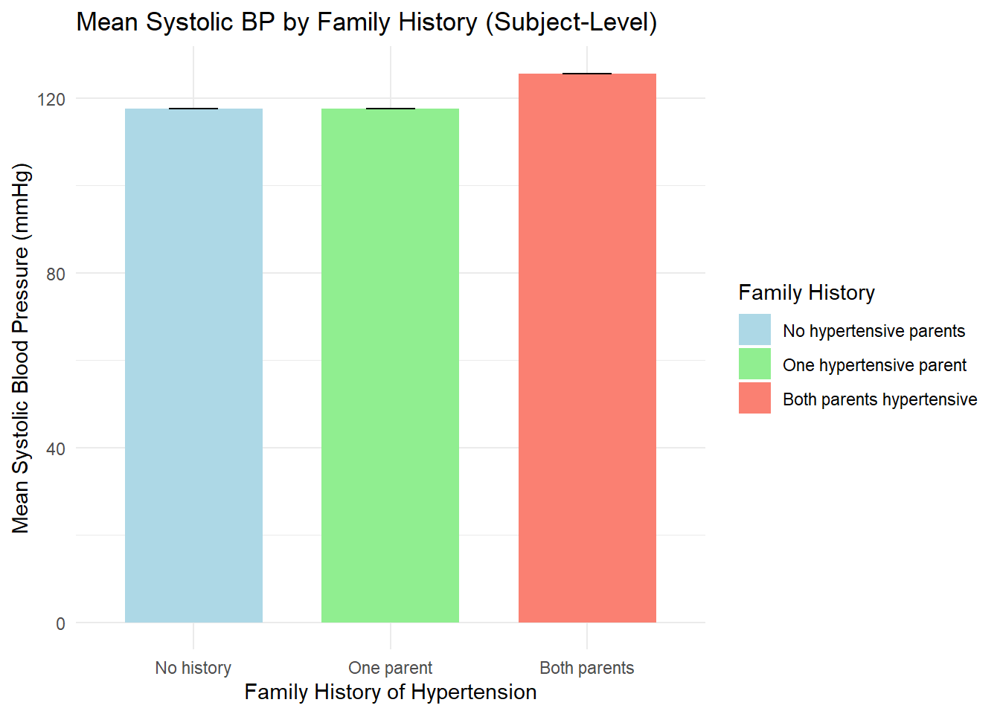
#Systolic BP by Stress Level
stress_summary <- data %>%
group_by(STR) %>%
summarise(
mean_SYS = mean(SYS, na.rm = TRUE),
sd_SYS = sd(SYS, na.rm = TRUE),
n = n(),
se_SYS = sd_SYS / sqrt(n)
)
print(stress_summary)# A tibble: 6 × 5
STR mean_SYS sd_SYS n se_SYS
<int> <dbl> <dbl> <int> <dbl>
1 1 118. 15.3 5599 0.204
2 2 119. 15.4 2243 0.326
3 3 118. 15.3 737 0.563
4 4 119. 16.2 184 1.19
5 5 119. 14.2 56 1.90
6 NA 120. 17.7 754 0.643#stree level plot (no difference)
stress_plot <- ggplot(stress_summary, aes(x = factor(STR), y = mean_SYS)) +
geom_bar(stat = "identity", fill = "steelblue", width = 0.7) +
geom_errorbar(aes(ymin = mean_SYS - se_SYS, ymax = mean_SYS + se_SYS),
width = 0.25) +
labs(title = "Mean Systolic BP by Stress Level",
x = "Stress Level",
y = "Mean Systolic Blood Pressure (mmHg)") +
theme_minimal()
print(stress_plot)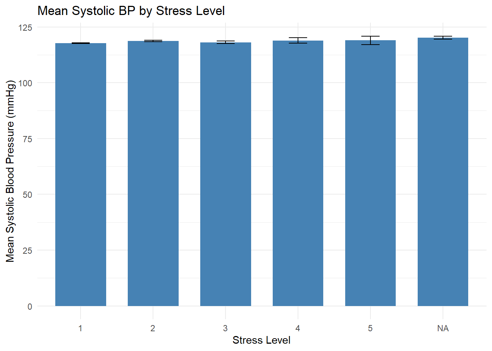
#Systolic BP by workday
workday_summary <- data %>%
group_by(DAY) %>%
summarise(
mean_SYS = mean(SYS, na.rm = TRUE),
sd_SYS = sd(SYS, na.rm = TRUE),
n = n(),
se_SYS = sd_SYS / sqrt(n)
)
print("Systolic BP by Working Status:")[1] "Systolic BP by Working Status:"print(workday_summary)# A tibble: 2 × 5
DAY mean_SYS sd_SYS n se_SYS
<fct> <dbl> <dbl> <int> <dbl>
1 NW 116. 14.9 4116 0.232
2 W 120. 15.9 5457 0.215#small difference in workday
workday_plot <- ggplot(workday_summary, aes(x = DAY, y = mean_SYS, fill = DAY)) +
geom_bar(stat = "identity", position = position_dodge(), width = 0.7) +
geom_errorbar(aes(ymin = mean_SYS - se_SYS, ymax = mean_SYS + se_SYS),
width = 0.25, position = position_dodge(0.7)) +
labs(title = "Mean Systolic BP by Working Status",
x = "Day Type",
y = "Mean Systolic Blood Pressure (mmHg)") +
scale_x_discrete(labels = c("Non-workday", "Workday")) +
scale_fill_manual(values = c("skyblue", "salmon"),
name = "Day Type",
labels = c("Non-workday", "Workday")) +
theme_minimal()
print(workday_plot)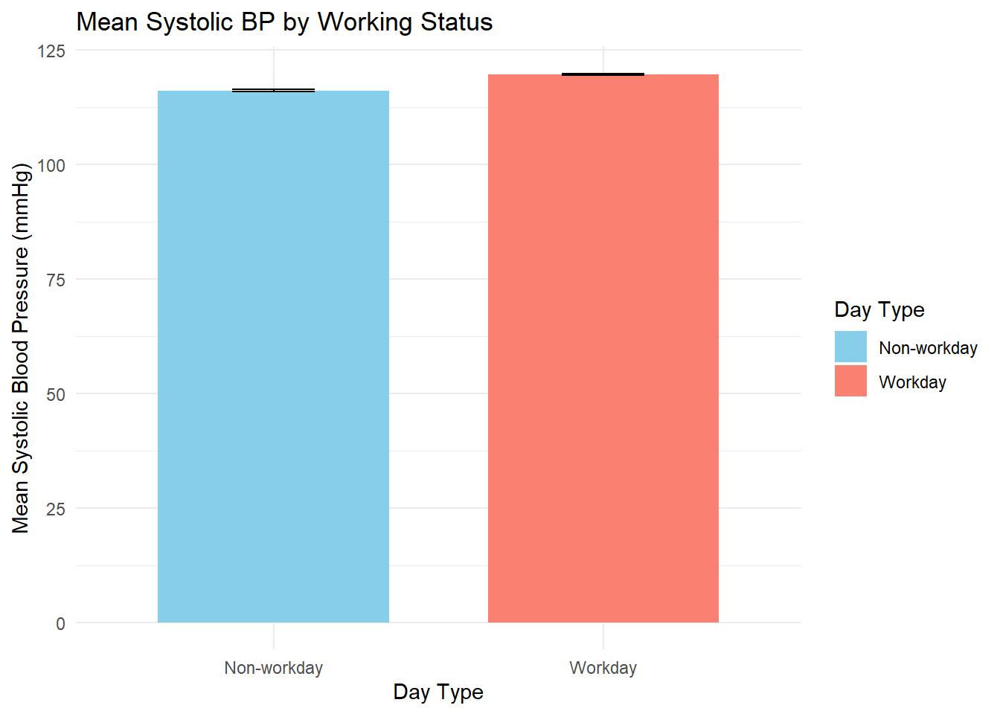
#Average change over the day
hourly_summary <- data %>%
group_by(hour_of_day) %>%
summarise(
mean_SYS = mean(SYS, na.rm = TRUE),
sd_SYS = sd(SYS, na.rm = TRUE),
n = n(),
se_SYS = sd_SYS / sqrt(n)
) %>%
filter(n >= 5)
print(hourly_summary)# A tibble: 19 × 5
hour_of_day mean_SYS sd_SYS n se_SYS
<dbl> <dbl> <dbl> <int> <dbl>
1 5 119 24.2 6 9.88
2 6 121. 13.9 162 1.09
3 7 119. 15.5 436 0.744
4 8 119. 15.2 532 0.659
5 9 118. 15.0 584 0.619
6 10 118. 15.8 608 0.641
7 11 118. 17.0 633 0.674
8 12 118. 15.4 630 0.613
9 13 119. 15.9 649 0.623
10 14 118. 15.2 625 0.608
11 15 118. 16.2 645 0.636
12 16 118. 14.9 630 0.594
13 17 120. 15.9 643 0.627
14 18 118. 14.9 624 0.597
15 19 119. 16.0 642 0.631
16 20 117. 14.6 617 0.587
17 21 116. 15.5 540 0.667
18 22 113. 14.8 280 0.884
19 23 115. 16.6 87 1.77 time_plot <- ggplot(hourly_summary, aes(x = hour_of_day, y = mean_SYS)) +
geom_line(size = 1, color = "steelblue") +
geom_point(size = 3, color = "steelblue") +
geom_ribbon(aes(ymin = mean_SYS - se_SYS, ymax = mean_SYS + se_SYS),
alpha = 0.2, fill = "steelblue") +
labs(title = "Diurnal Pattern of Systolic BP",
x = "Hour of Day",
y = "Mean Systolic Blood Pressure (mmHg)") +
scale_x_continuous(breaks = seq(5, 23, 2)) +
theme_minimal()Warning: Using `size` aesthetic for lines was deprecated in ggplot2 3.4.0.
ℹ Please use `linewidth` instead.print(time_plot)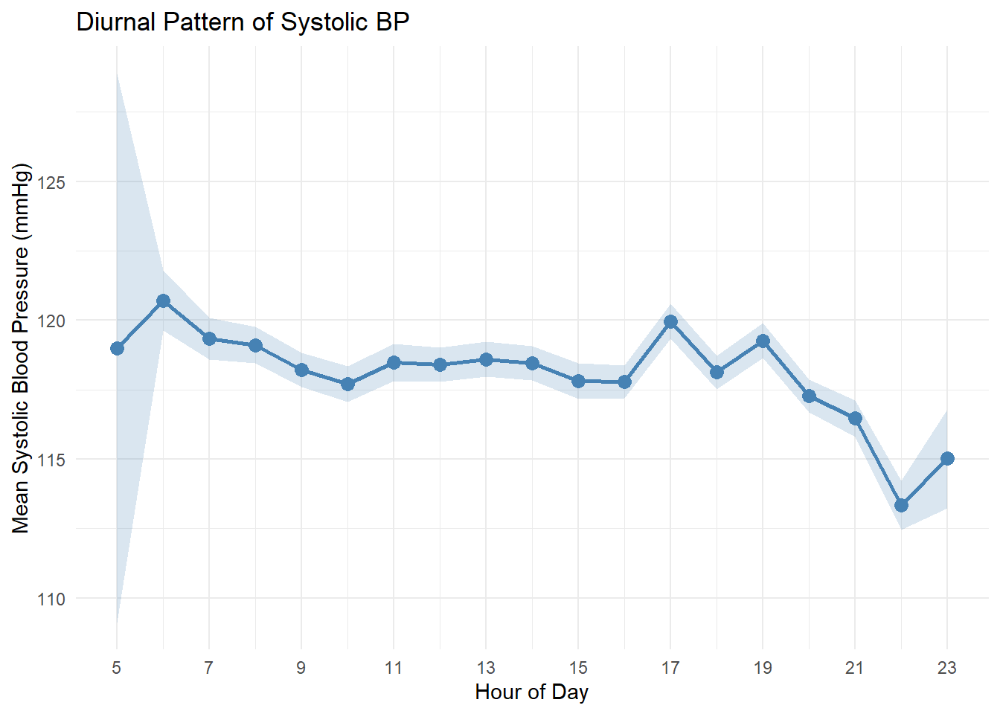
time20_summary <- data %>%
group_by(time_20) %>%
summarise(
mean_SYS = mean(SYS, na.rm = TRUE),
sd_SYS = sd(SYS, na.rm = TRUE),
n = n(),
se_SYS = sd_SYS / sqrt(n)
)
time20_plot <- ggplot(time20_summary, aes(x = time_20, y = mean_SYS)) +
geom_line(size = 1, color = "darkblue") +
geom_ribbon(aes(ymin = mean_SYS - se_SYS, ymax = mean_SYS + se_SYS),
alpha = 0.2, fill = "steelblue") +
labs(title = "Systolic BP Throughout the Day (20-minute intervals)",
x = "Time (hours from midnight)",
y = "Mean Systolic Blood Pressure (mmHg)") +
theme_minimal()
print(time20_plot)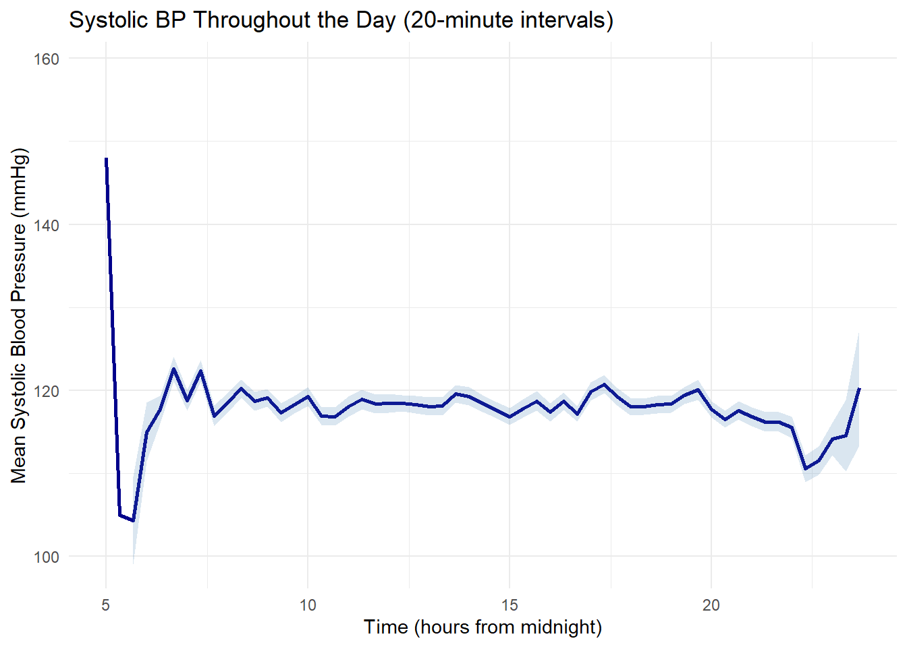
#workday ggplot
time_workday <- data %>%
group_by(hour_of_day, DAY) %>%
summarise(
mean_SYS = mean(SYS, na.rm = TRUE),
sd_SYS = sd(SYS, na.rm = TRUE),
n = n(),
se_SYS = sd_SYS / sqrt(n)
) %>%
filter(n >= 5) `summarise()` has grouped output by 'hour_of_day'. You can override using the
`.groups` argument.time_day_plot <- ggplot(time_workday, aes(x = hour_of_day, y = mean_SYS, color = DAY, group = DAY)) +
geom_line(size = 1) +
geom_point(size = 2) +
geom_ribbon(aes(ymin = mean_SYS - se_SYS, ymax = mean_SYS + se_SYS, fill = DAY),
alpha = 0.2, color = NA) +
labs(title = "Systolic BP by Time of Day and Working Status",
x = "Hour of Day",
y = "Mean Systolic Blood Pressure (mmHg)") +
scale_x_continuous(breaks = seq(5, 23, 2)) +
scale_color_manual(values = c("skyblue", "salmon"),
name = "Day Type",
labels = c("Non-workday", "Workday")) +
scale_fill_manual(values = c("skyblue", "salmon"),
name = "Day Type",
labels = c("Non-workday", "Workday")) +
theme_minimal()
print(time_day_plot)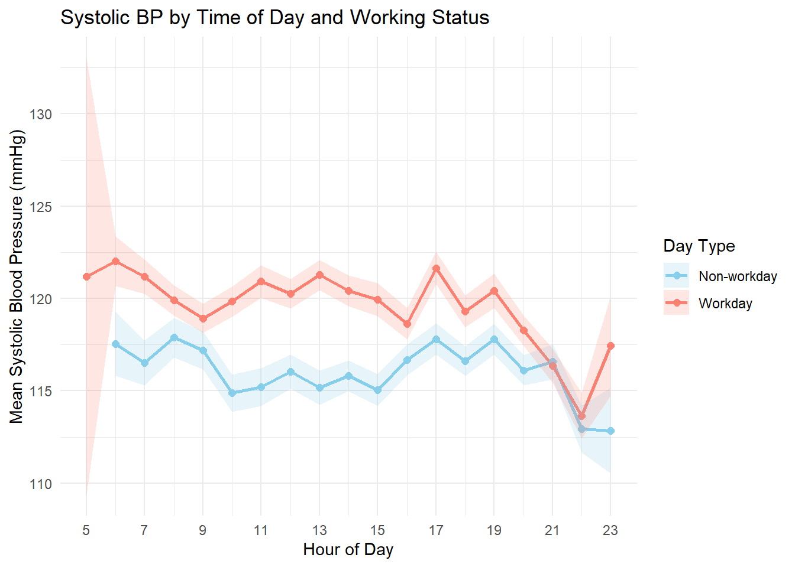
#Family history ggplot
time_fh_summary <- data %>%
group_by(hour_of_day, FH123) %>%
summarise(
mean_SYS = mean(SYS, na.rm = TRUE),
sd_SYS = sd(SYS, na.rm = TRUE),
n = n(),
se_SYS = sd_SYS / sqrt(n),
.groups = "drop"
) %>%
filter(n >= 5)
time_fh_plot <- ggplot(time_fh_summary, aes(x = hour_of_day, y = mean_SYS, color = FH123, group = FH123)) +
geom_line(size = 1) +
geom_point(size = 2) +
geom_ribbon(aes(ymin = mean_SYS - se_SYS, ymax = mean_SYS + se_SYS, fill = FH123),
alpha = 0.2, color = NA) +
labs(title = "Systolic BP by Time of Day and Family History",
x = "Hour of Day",
y = "Mean Systolic Blood Pressure (mmHg)") +
scale_x_continuous(breaks = seq(5, 23, 2)) +
scale_color_manual(values = c("royalblue", "forestgreen", "firebrick"),
name = "Family History",
labels = c("No hypertensive parents",
"One hypertensive parent",
"Both parents hypertensive")) +
scale_fill_manual(values = c("royalblue", "forestgreen", "firebrick"),
name = "Family History",
labels = c("No hypertensive parents",
"One hypertensive parent",
"Both parents hypertensive")) +
theme_minimal()
print(time_fh_plot)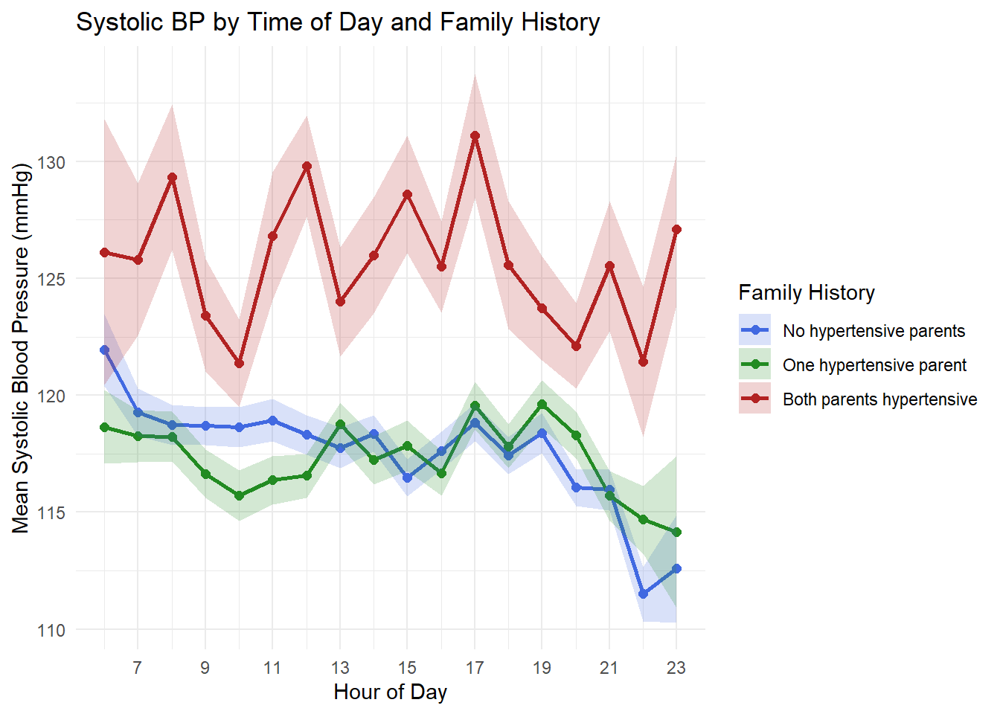
subject_means <- data %>%
group_by(SNUM) %>%
summarise(mean_SYS = mean(SYS, na.rm = TRUE))
overall_mean <- mean(subject_means$mean_SYS)
between_subject_sd <- sd(subject_means$mean_SYS)
cat("Between-subject variation:\n")Between-subject variation:cat("Overall mean SYS:", overall_mean, "\n")Overall mean SYS: 118.1433 cat("SD of subject means:", between_subject_sd, "\n")SD of subject means: 8.673331 subject_hist <- ggplot(subject_means, aes(x = mean_SYS)) +
geom_histogram(binwidth = 2, fill = "steelblue", color = "white") +
geom_vline(xintercept = overall_mean, color = "red", linetype = "dashed", size = 1) +
labs(title = "Distribution of Subject Mean Systolic BP",
x = "Mean Systolic BP (mmHg)",
y = "Number of Subjects") +
annotate("text", x = overall_mean + 5, y = 20,
label = paste("Overall Mean =", round(overall_mean, 1), "mmHg"),
color = "red") +
theme_minimal()
print(subject_hist)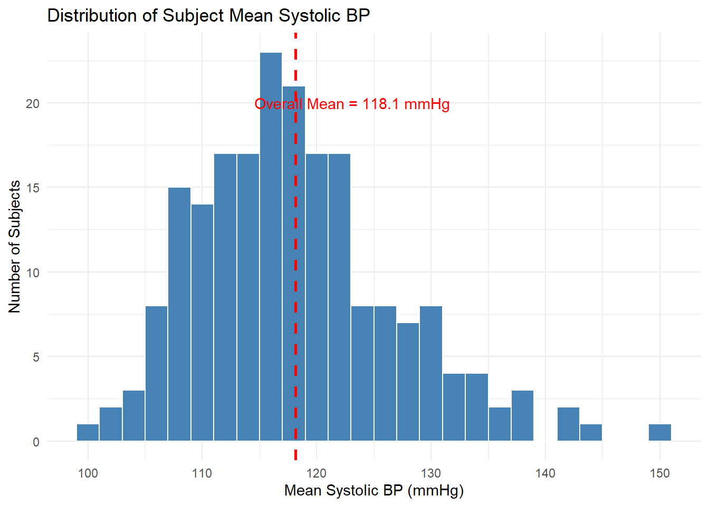
me_model <- lmer(SYS ~ time + DAY + HRT + MNACT5 + POSTURE + FH123 + TIR + (1 | SNUM),
data = data)
print(summary(me_model))Linear mixed model fit by REML ['lmerMod']
Formula: SYS ~ time + DAY + HRT + MNACT5 + POSTURE + FH123 + TIR + (1 |
SNUM)
Data: data
REML criterion at convergence: 62880.5
Scaled residuals:
Min 1Q Median 3Q Max
-4.9818 -0.5500 -0.0390 0.5233 6.5197
Random effects:
Groups Name Variance Std.Dev.
SNUM (Intercept) 59.25 7.698
Residual 157.00 12.530
Number of obs: 7899, groups: SNUM, 183
Fixed effects:
Estimate Std. Error t value
(Intercept) 1.027e+02 3.394e+00 30.246
time 1.365e-04 6.003e-04 0.227
DAYW 2.518e+00 1.186e+00 2.124
HRT 1.013e-01 1.558e-02 6.504
MNACT5 3.338e-02 2.671e-03 12.496
POSTURERECLINE -3.923e+00 3.013e+00 -1.302
POSTURESIT -1.992e-01 2.952e+00 -0.067
POSTURESTAND 8.528e-02 2.953e+00 0.029
FH123YES -7.195e-03 1.253e+00 -0.006
FH123YESYES 7.186e+00 2.337e+00 3.075
TIR -2.980e-01 1.825e-01 -1.632
Correlation of Fixed Effects:
(Intr) time DAYW HRT MNACT5 POSTURER POSTURESI POSTUREST
time -0.100
DAYW -0.182 0.017
HRT -0.332 -0.069 -0.002
MNACT5 -0.098 0.077 -0.008 -0.193
POSTURERECL -0.865 -0.035 0.006 0.023 0.083
POSTURESIT -0.871 -0.013 0.004 0.008 0.013 0.976
POSTURESTAN -0.858 -0.002 0.001 -0.023 -0.005 0.972 0.994
FH123YES -0.140 -0.002 -0.061 0.019 0.000 0.000 0.000 0.000
FH123YESYES -0.087 -0.006 0.033 0.008 0.005 0.001 -0.001 0.000
TIR -0.087 -0.372 -0.048 0.074 0.005 0.007 0.024 0.024
FH123YES FH123YESY
time
DAYW
HRT
MNACT5
POSTURERECL
POSTURESIT
POSTURESTAN
FH123YES
FH123YESYES 0.206
TIR 0.013 0.013 me_model2 <- lmer(SYS ~ time + time2 + DAY + HRT + MNACT5 + POSTURE + FH123 + TIR + (1 | SNUM),
data = data)Warning: Some predictor variables are on very different scales: consider
rescalingprint(summary(me_model2))Linear mixed model fit by REML ['lmerMod']
Formula: SYS ~ time + time2 + DAY + HRT + MNACT5 + POSTURE + FH123 + TIR +
(1 | SNUM)
Data: data
REML criterion at convergence: 62900.6
Scaled residuals:
Min 1Q Median 3Q Max
-5.0284 -0.5536 -0.0421 0.5222 6.4754
Random effects:
Groups Name Variance Std.Dev.
SNUM (Intercept) 59.22 7.696
Residual 156.93 12.527
Number of obs: 7899, groups: SNUM, 183
Fixed effects:
Estimate Std. Error t value
(Intercept) 1.058e+02 3.718e+00 28.444
time -7.939e-03 4.005e-03 -1.982
time2 4.607e-06 2.259e-06 2.039
DAYW 2.510e+00 1.185e+00 2.118
HRT 1.050e-01 1.568e-02 6.696
MNACT5 3.354e-02 2.672e-03 12.553
POSTURERECLINE -4.070e+00 3.013e+00 -1.351
POSTURESIT -2.372e-01 2.952e+00 -0.080
POSTURESTAND 6.012e-02 2.952e+00 0.020
FH123YES -3.328e-03 1.252e+00 -0.003
FH123YESYES 7.183e+00 2.337e+00 3.074
TIR -3.831e-01 1.872e-01 -2.046
Correlation of Fixed Effects:
(Intr) time time2 DAYW HRT MNACT5 POSTURER POSTURESI
time -0.418
time2 0.409 -0.989
DAYW -0.168 0.006 -0.003
HRT -0.254 -0.124 0.115 -0.003
MNACT5 -0.078 -0.017 0.029 -0.008 -0.188
POSTURERECL -0.799 0.018 -0.024 0.007 0.020 0.082
POSTURESIT -0.797 0.004 -0.006 0.004 0.008 0.012 0.975
POSTURESTAN -0.785 0.004 -0.004 0.001 -0.023 -0.005 0.971 0.994
FH123YES -0.127 -0.002 0.002 -0.061 0.019 0.000 0.000 0.000
FH123YESYES -0.079 0.000 -0.001 0.033 0.008 0.005 0.001 -0.001
TIR -0.169 0.166 -0.223 -0.046 0.046 -0.002 0.012 0.025
POSTUREST FH123YES FH123YESY
time
time2
DAYW
HRT
MNACT5
POSTURERECL
POSTURESIT
POSTURESTAN
FH123YES 0.000
FH123YESYES 0.000 0.206
TIR 0.024 0.013 0.013
fit warnings:
Some predictor variables are on very different scales: consider rescaling#summary table
| Variable | Min | Max | Mean | Median |
|---|---|---|---|---|
| SYS | 75 | 200 | 118.2 | 117 |
| DIA | 40 | 120 | 71.4 | 71 |
| HRT | 35 | 144 | 80.0 | 80 |
| MNACT5 | 0 | 359.4 | 190.4 | 207 |
| STR | 1 | 5 | 1.5 | 1 |
| HAP | 1 | 5 | 3.1 | 3 |
| TIR | 1 | 5 | 2.0 | 2 |
| AGE | 24 | 50 | 37.8 | 38 |
| Variable | Category | Count | Percentage |
|---|---|---|---|
| PHASE | L (luteal) | 4,836 | 50.5% |
| F (follicular) | 4,737 | 49.5% | |
| DAY | W (workday) | 5,457 | 57.0% |
| NW (non-workday) | 4,116 | 43.0% | |
| POSTURE | SIT | 4,101 | 45.6% |
| STAND | 4,255 | 47.3% | |
| RECLINE | 631 | 7.0% | |
| FH123 | NO | 5,298 | 55.3% |
| YES | 3,633 | 38.0% | |
| YESYES | 642 | 6.7% |
#Family history table by nurse
| Family History | Mean SYS | Count | SE |
|---|---|---|---|
| NO (no hypertensive parents) | 117.6 | 112 | 0.79 |
| YES (one hypertensive parent) | 117.6 | 77 | 0.96 |
| YESYES (both parents hypertensive) | 125.7 | 14 | 2.40 |